Support for skins
A skin is a collection of theme, watermark, painters and other settings.
In order to set a skin, you can either call the SubstanceSkin.set method or invoke
the following API available on the org.jvnet.substance.SubstanceLookAndFeel
class:
/**
* Sets the specified skin.
*
* @param skin
* Skin to set.
* @return <code>true</code> if the specified skin has been set
* successfully, <code>false</code> otherwise.
* @since version 3.1
*/
public static boolean setSkin(SubstanceSkin skin) {
/**
* Sets the specified skin.
*
* @param skinClassName
* Skin to set.
* @return <code>true</code> if the specified skin has been set
* successfully, <code>false</code> otherwise.
* @since version 3.1
*/
public static boolean setSkin(String skinClassName) {
Four toned-down core skins are available:
Business available in the
org.jvnet.substance.skin.BusinessSkin.
In addition, the
org.jvnet.substance.skin.SubstanceBusinessLookAndFeel
can be used with one of the following options:
-Dswing.defaultlaf=org.jvnet.substance.skin.SubstanceBusinessLookAndFeelUIManager.setLookAndFeel(new SubstanceBusinessLookAndFeel())UIManager.setLookAndFeel("org.jvnet.substance.skin.SubstanceBusinessLookAndFeel");
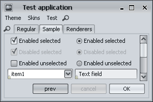 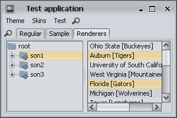
Creme available in the
org.jvnet.substance.skin.CremeSkin.
In addition, the
org.jvnet.substance.skin.SubstanceCremeLookAndFeel
can be used with one of the following options:
-Dswing.defaultlaf=org.jvnet.substance.skin.SubstanceCremeLookAndFeelUIManager.setLookAndFeel(new SubstanceCremeLookAndFeel())UIManager.setLookAndFeel("org.jvnet.substance.skin.SubstanceCremeLookAndFeel");
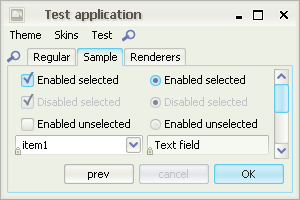 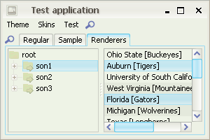
Sahara available in the
org.jvnet.substance.skin.SaharaSkin.
In addition, the
org.jvnet.substance.skin.SubstanceSaharaLookAndFeel
can be used with one of the following options:
-Dswing.defaultlaf=org.jvnet.substance.skin.SubstanceSaharaLookAndFeelUIManager.setLookAndFeel(new SubstanceSaharaLookAndFeel())UIManager.setLookAndFeel("org.jvnet.substance.skin.SubstanceSaharaLookAndFeel");
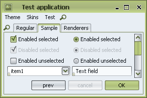

Moderate available in the
org.jvnet.substance.skin.ModerateSkin.
In addition, the
org.jvnet.substance.skin.SubstanceModerateLookAndFeel
can be used with one of the following options:
-Dswing.defaultlaf=org.jvnet.substance.skin.SubstanceModerateLookAndFeelUIManager.setLookAndFeel(new SubstanceModerateLookAndFeel())UIManager.setLookAndFeel("org.jvnet.substance.skin.SubstanceModerateLookAndFeel");
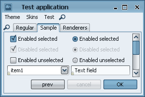

Support for color-blind mode
The org.jvnet.substance.theme.SubstanceTritanopiaTheme
provides support for previewing your application in tritanopia
color blindness mode. Use the SubstanceTheme.tritanopia
API to apply this mode to any Substance theme. Here is an example of
application under Mango theme (regular viewing) and under the same Mango
theme in tritanopia simulation mode:
The org.jvnet.substance.theme.SubstanceProtanopiaTheme
provides support for previewing your application in protanopia
color blindness mode. Use the SubstanceTheme.protanopia
API to apply this mode to any Substance theme. Here is an example of
application under Mango theme (regular viewing) and under the same Mango
theme in protanopia simulation mode:
The org.jvnet.substance.theme.SubstanceDeuteranopiaTheme
provides support for previewing your application in deuteranopia
color blindness mode. Use the SubstanceTheme.deuteranopia
API to apply this mode to any Substance theme. Here is an example of
application under Mango theme (regular viewing) and under the same Mango
theme in deuteranopia simulation mode:
Animations on lists, tables and trees
Lists, tables and trees provide out-of-the-box animation effects on rollover and selection. The maximum selection opacity is 70%, the maximum rollover opacity is 40% - for all controls.
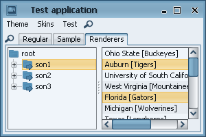
Support for multi-mixed themes
The org.jvnet.substance.theme.SubstanceMixTheme
deprecates the org.jvnet.substance.theme.SubstanceMixBiTheme
(which is still supported) to provide multi-mixed themes. Examples of regular buttons
under multi-mixed themes:
Larger screenshot of Bottle Green - Lime Green - Bottle Green:
Larger screenshot of Brown - Sunglare - Orange:
Larger screenshot of Barby Pink - Purple - Raspberry:
Scrollbar buttons location
The SubstanceLookAndFeel.SCROLL_PANE_BUTTONS_POLICY
client property specifies the location for scrollbar buttons. The value should
be one of the SubstanceConstants.ScrollPaneButtonPolicyKind
enum. Available values:
NONE- no buttons are shown.OPPOSITE- the default policy. The decrease button is on one side of the scroll bar, the increase button is on another side of the scroll bar.ADJACENT- the decrease button is right next to the increase button of the scroll bar.MULTIPLE- the combination of two. There are two decrease buttons, one on each side of the scroll bar (one of them is right next to the increase button).MULTIPLE_BOTH- Two pairs of decrease / increase buttons on each side of the scroll bar.
The following screenshot shows horizontal scrollbar under different policies and
orientations. The first scrollbar is under the default OPPOSITE
policy. The second scrollbar is under the ADJACENT policy
in LTR application. The third scrollbar is under the MULTIPLE policy
in LTR application. The fourth scrollbar is under the ADJACENT policy
in RTL application. The fifth scrollbar is under the MULTIPLE policy
in RTL application. The sixth scrollbar is under the NONE policy.
The seventh scrollbar is under the MULTIPLE_BOTH policy.
The following screenshot shows vertical scrollbar under different policies.
The first scrollbar is under the default OPPOSITE
policy. The second scrollbar is under the ADJACENT policy.
The third scrollbar is under the MULTIPLE policy.
The fourth scrollbar is under the NONE policy.
The fifth scrollbar is under the MULTIPLE_BOTH policy.
Support for flat scrollbar buttons
Setting the SubstanceLookAndFeel.BUTTON_PAINT_NEVER_PROPERTY
to Boolean.TRUE on a
JScrollPane will result in
the scroll buttons being permanently flat (only displaying the arrow - no
background).
Setting the SubstanceLookAndFeel.FLAT_PROPERTY
to Boolean.TRUE on a
JScrollPane will result in
the scroll buttons being flat (displaying background only on rollover / press).
The screenshot shows a scrollbar in regular mode (scroll button shows the background) and in flat mode (scroll button doesn't show the background):
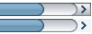Improved micro-design of text components
The text components, comboboxes and spinners are consistent and have the same default height, insets and layout for internal buttons. Screenshot of these components under Substance 3.0 shows that combo is 6 pixels higher than all other components and the spinner buttons are drawn over the borders:
Screenshot of the same application under Substance 3.1 shows the components having the same height, consistent insets and the spinner buttons under the same layout as the combobox button:
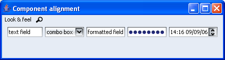Icons on context edit menus on text components
Using Tango icons on context edit menus on text components (in laf-widget project):
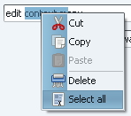Negated themes
Added support for negated themes. In order to enable negated themes, use one of
UIManager.put(SubstanceLookAndFeel.ENABLE_NEGATED_THEMES, Boolean.TRUE)-Dsubstancelaf.enableNegatedThemesVM flag
When negated themes are enabled, the SubstanceLookAndFeel.getAllThemes()
function returns negated themes for all bright and cold themes. The matching theme kind is
ThemeKind.NEGATED. All the colors of the original
theme are negated, effectively making the non-active colors dark. Note that unlike the
inverted themes, the negated themes
are the exact negation of the original theme.
On the left is the screenshot of negated Aqua theme, and on the right is the screenshot of inverted Aqua theme
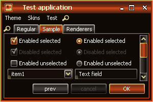 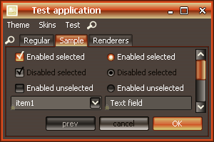On the left is the screenshot of negated Sunset theme, and on the right is the screenshot of inverted Sunset theme
 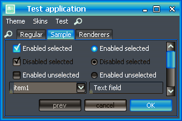
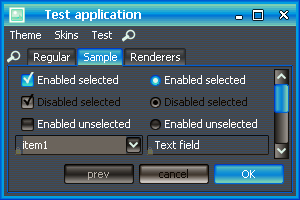
Native icons in filechooser dialog
The filechooser dialog uses native icons:
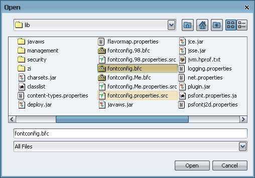New dark themes
Two new core dark themes have been added, Jade Forest and Ultramarine:
 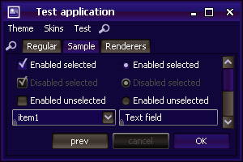
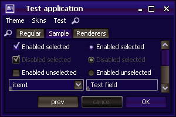
Support for hue-shifted themes
The org.jvnet.substance.theme.SubstanceHueShiftTheme
provides support hue-shifted themes. Use SubstanceTheme.hueShift
API. The original theme maintains the same
saturation and brightness but has a different (shifted) hue. Here is a screenshot
of the original theme (complex Green Magic):
The same theme shifted by 10% (factor of 0.1):
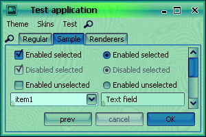The same theme shifted by 50% (factor of 0.5):
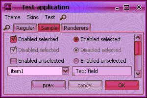Option for separate watermark theme on complex themes
The SubstanceComplexTheme has a new option
to specify the watermark theme. When no watermark theme is specified, the
default theme of the complex theme is used to paint the watermark. Screenshot
of a complex theme that has Ebony as a default theme,
which is also used for the wateramrk theme (no separate watermark theme
specified):
The same complex theme, but with a watermark theme (Inverted Barby Pink):
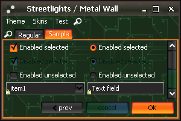Selective theme saturation
SubstanceTheme.saturate has a new version
that gets a boolean parameter that specifies if the entire theme
should be saturated. If this parameter is false, only the components
in active visual state will be saturated / desaturated. This API is better suited for
simple themes.
Screenshot of the original theme (Complex Mango):
The saturated version of the same theme using the old API - note that all components (and the watermark) are saturated:
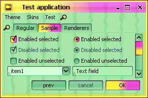The saturated version of the same theme using the new API - note that aonly active components are saturated:
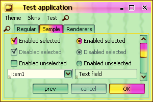New gradient painters
Three new gradient painters were added (two are based on the soft-clipping technique). Screenshot of a button under new Gradient Wave (note that the bottom part of the button is slightly hue-shifted):
Screenshot of the same button under new Specular Wave (note that the bottom part of the button is slightly hue-shifted):
Screenshot of the same button under new Subdued:
Additional animation effects
Fade animation effects have been added on:
- Menus and menu items
- Text components (text field, formatted text field, editor pane, password field, text area)
- Button text on complex themes that have active and default of opposite darkness
- Progress bar
Support for open sides on buttons
The new SubstanceLookAndFeel.BUTTON_OPEN_SIDE_PROPERTY
client property can be set on a button to specify open side(s). An open side will
not have the border and have extended gradient painting. Internally, this property
is used to paint scrollbar and spinner buttons that blend seamlessly with other
visual parts of the relevant control.
The value of the property can be one of the following (where
Side enum is defined in the
org.jvnet.substance.utils.SubstanceConstants class):
Set<Side>- allows defining multiple open sides.String- should correspond to one of the values of theSideenum.String[]- each value should correspond to one of the values of theSideenum. Allows defining multiple open sides.Side.Side[]- allows defining multiple open sides.
The screenshot below shows buttons with different open (and straight) sides as compared to the same buttons with no open sides:

Extended customization of tabbed panes
The SubstanceLookAndFeel.PAINT_ACTIVE_PROPERTY
client property can be set on either the specific tab component or on the
tabbed pane. In the first case, the tab will be painted in active theme
as long as it's enabled. In the second case, all enabled tabs will be painted
in active theme. Example of a tabbed pane with the second, fifth and seventh
tabs marked with this property:
The SubstanceLookAndFeel.THEME_PROPERTY
client property can be set on either the specific tab component or on the
tabbed pane. In the first case, the tab will be painted using the specified
theme. In the second case, all enabled tabs will be painted
using the specified theme. Setting a complex theme can make the selected and
rolled over tabs appear in one color, the enabled tabs in another color and
disabled tabs in yet another color.
Example of the same tabbed pane with a complex theme set (the complex theme uses Bottle Green for active controls, Lime Green for default controls and Purple for disabled controls):
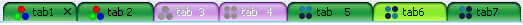Support for "pinning" internal frames
The title pane of internal frames has additional button that allows
"pinning" the internal frame (moving and resizing are disabled). In
addition, the SubstanceLookAndFeel.PERMANENTLY_PINNED
property can be set on a JInternalFrame to
indicate that the internal frame is permanently pinned (until this property
is reset) - value should
be Boolean.TRUE in this case.
The following screenshot shows an internal frame in six different states:
- Unpinned - the default.
- Pinned - user clicked on the pin button and it is selected.
- Permanently pinned - using the property above. The pin button can't be clicked.
- Unpinned with additional custom buttons (using
SubstanceLookAndFeel.setRootPaneCustomTitleButtonsAPI). - Pinned with additional custom buttons (using
SubstanceLookAndFeel.setRootPaneCustomTitleButtonsAPI). - Permanently pinned with additional custom buttons (using
SubstanceLookAndFeel.setRootPaneCustomTitleButtonsAPI).
Support for custom background composites
The SubstanceLookAndFeel.BACKGROUND_COMPOSITE client property
can be set on a JScrollPane,
JTabbedPane and
JToolBar.
The value should be an instance of
org.jvnet.substance.painter.ControlBackgroundComposite
interface. At runtime it defines the background composite of scrollbar buttons
and tabs. A useful core implementation is in the
org.jvnet.substance.painter.AlphaControlBackgroundComposite that
provides a simple alpha-based translucency. Here is a screenshot of the same
scrollbar under default (none) composite background, a 75% translucent, 50% translucent
and 25% translucent composite backgrounds:

If this property is set on a JToolBar and the toolbar has
the SubstanceLookAndFeel.TOOLBAR_BUTTON_FLAT client property set to
Boolean.FALSE, the toolbar buttons can have arbitrary translucency.